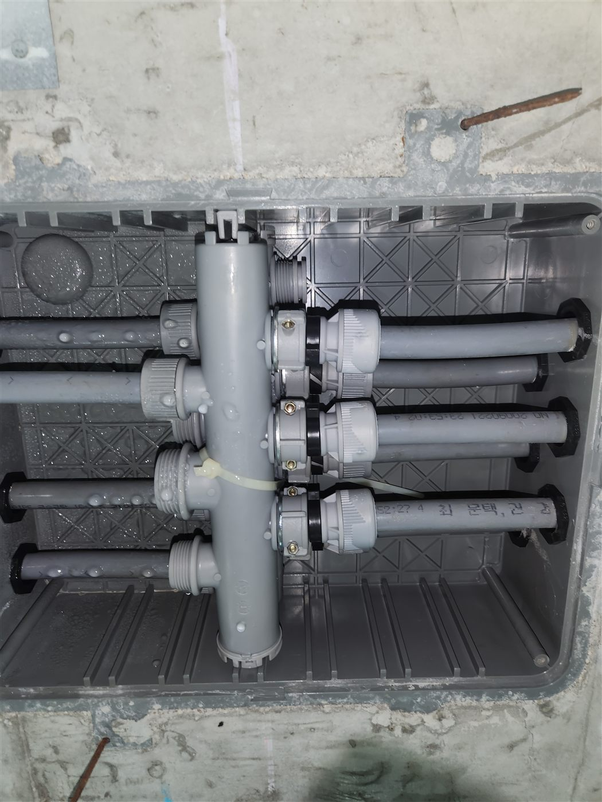
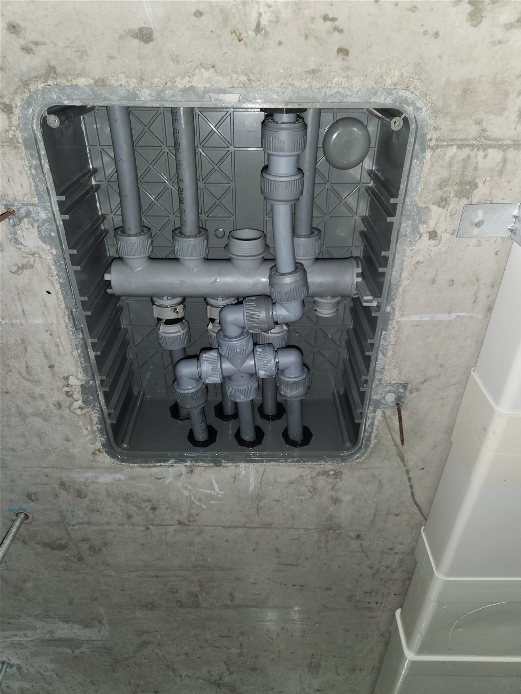

현장 상황
평택시 비전동 아파트에서 분배기 누수가 의심되어 분배기를 교체한 현장입니다. 분배기는 하나의 급수 배관이 욕실·주방 등 여러 곳으로 나뉘는 지점에 설치되는 부속으로, 보통 벽 속 분배기함에 들어 있어 평소에는 존재를 잊고 지내게 됩니다.
분배기함 확인
분배기함을 열어 내부를 확인했습니다. 여러 갈래의 배관이 한곳에 모여 있어서, 어느 연결부에서 문제가 생겼는지 하나씩 따져보는 점검이 필요합니다.

분배기 교체
문제가 있는 분배기는 새 제품으로 교체하고, 각 배관의 연결부를 다시 체결했습니다. 교체 후에는 라인별로 물을 열어 이상이 없는지 확인했습니다.


분배기 누수의 특징
분배기는 여러 배관이 모이는 부속이라 연결부가 많고, 한 곳이 헐거워지거나 부식되면 적은 양의 물이 오래 새는 경우가 많습니다. 벽 속에 있어서 벽면이 눅눅해지거나 곰팡이가 생긴 뒤에야 발견되는 일이 흔합니다. 교체할 때는 연결부마다 체결 상태를 확인하고 모든 라인을 열어 이상이 없는지 봅니다.
마무리
다용도실이나 현관 쪽 벽면이 원인 모르게 축축하다면 분배기 누수를 의심해 볼 수 있습니다. 벽 속에 있는 부품은 증상이 한참 뒤에야 드러나는 경우가 많아서, 이상이 느껴지면 일찍 확인하는 편이 공사 범위를 줄입니다.
분배기 교체 후에는 모든 라인을 다시 열고 닫으며 정상 작동을 확인한 뒤 마칩니다. 평택 비전동을 비롯한 아파트 단지에서 벽면이 이유 없이 축축하다면 편하게 문의해 주세요.
접수 안내
비슷한 증상으로 문의하실 곳을 찾고 계신다면 전화로 접수해 주세요. 접수 건은 확인 후 신속하게 연결해 안내해 드리며, 현장 진단 후 견적에 동의하신 뒤에만 작업이 진행됩니다.